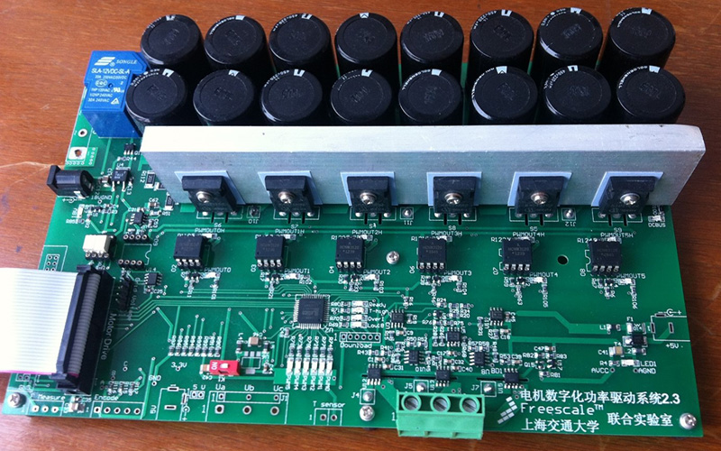
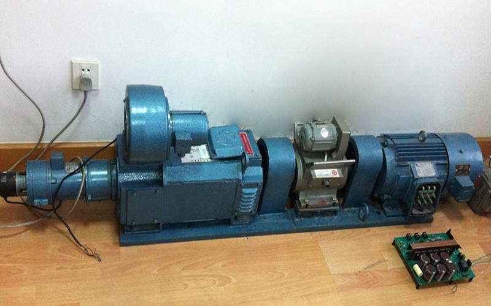
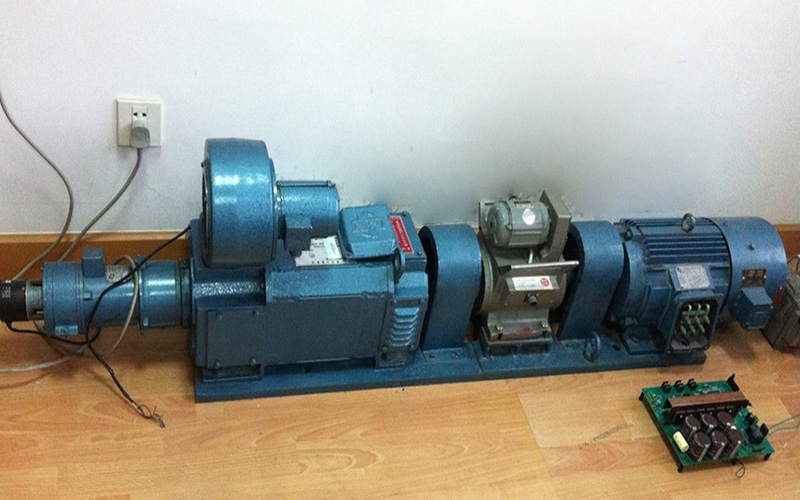

基于DSP的电机数字化调速平台
-

基于TI公司DSP芯片的控制器
-

电机变频调速功率板
- 
基于DSP的电机数字化调速平台建设
- 
项目介绍
交流感应电机、直流电机、交流永磁同步电机、直流无刷电机和开关磁阻电机等通用数字化调速控制器
- 系统简介
- 以美国TI公司的TMS320F28335为核心的数字化电机调速系统，主要分为核心控制板和电机驱动功率板，适用于各类电机调速
- 技术环节
-
- 硬件系统：采用可编程逻辑器件，方便改变死区和信号互锁，同时具有故障保护功能
- 通讯系统：与上位机进行以太网、CAN通信，上位机显示工作时的电流、转矩和速度曲线，使仅仅研究调速策略的人员也可以方便使用控制电机运行
- 项目说明
- 此系统软件、硬件均为自行设计，可用于电机调速策略的研究工作、研究生教学的实验